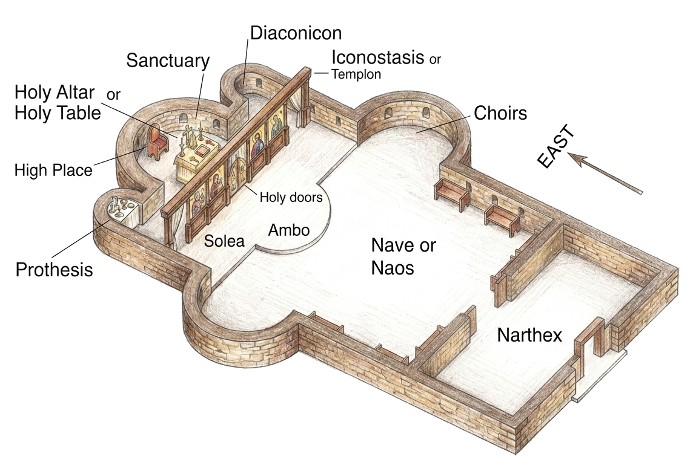
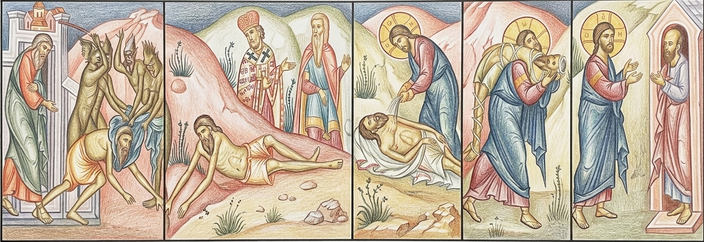
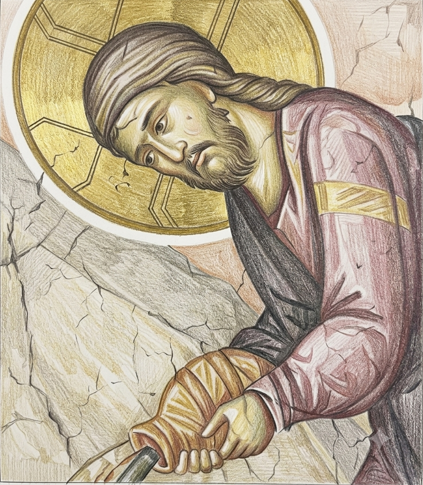
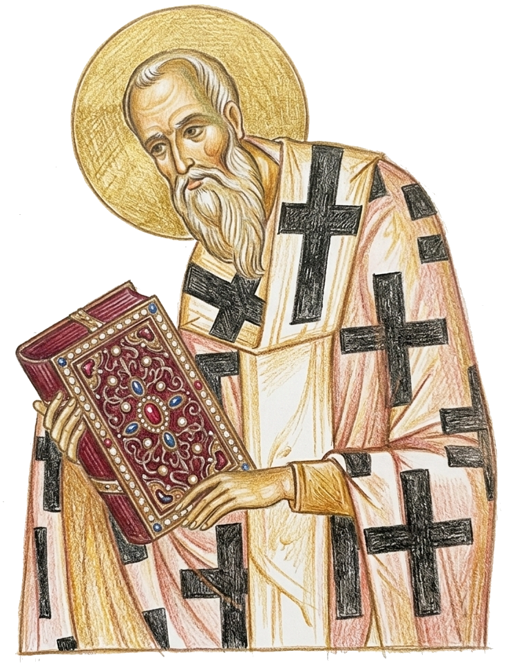
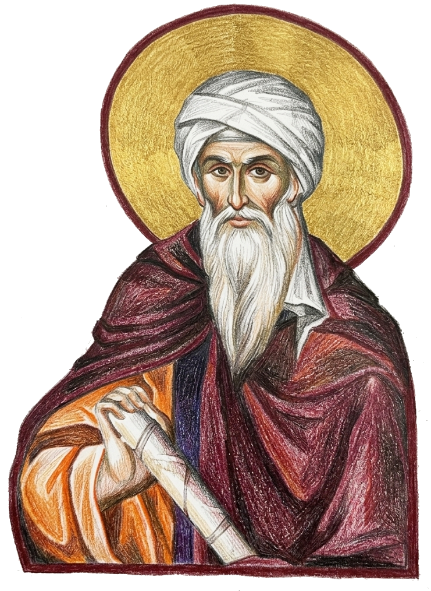
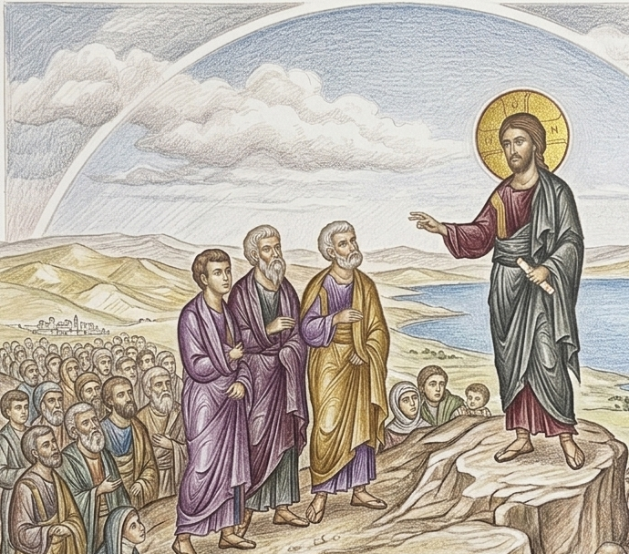

The Liturgy of the Word
/ The Liturgy of the Catechumens
Opening Blessing of the Kingdom
Deacon: ▶ Bless, Master.
Priest: Blessed is the Kingdom of the Father, and of the Son, and of the Holy Spirit, now and ever and unto ages of ages.
People: Amen.
(Note: This column contains descriptions of the actions performed during the Liturgy.)
The Holy Doors are opened.
The priest and the deacon bow three times toward the Altar. The deacon goes out of the altar area and stands before the Holy Doors and says: ▶
Word
Main Parts of an Orthodox Church

“The temple is experienced and perceived as sobor (a Russian word meaning “assembly,” or “council,” and “cathedral”), as the gathering together of heaven and earth and all creation in Christ – which constitutes the essence and purpose of the Church.”2
There is a common misconception which thinks of the iconostasis as a wall of separation between the altar and the laity. “Yet, as strange as it may seem to the majority of Orthodox today, the iconostasis originated from a completely opposite purpose: not to separate but to unite. The icon is a witness, or, better still, a consequence of the unification of the divine and the human, of heaven and earth, that has been accomplished in Jesus Christ. All icons are in essence icons of the incarnation. Thus, the iconostasis originated from the experience of the temple as ‘heaven on earth,’ as testimony to the fact that ‘the kingdom of heaven has drawn near.’ Like all the rest of the iconography in the church building, it is an incarnation of the vision of the Church as sobor, as the union of the visible and invisible worlds, as the manifestation and presence of the new and transfigured creation.”3
“The Sanctuary is the place of the Altar. The Altar is the mystical center of the church. It ‘represents’ (makes present, actualizes, reveals to us – for such is the realistic meaning of liturgical representation): (a) the Throne of God, to which Christ has raised us in His glorious ascension, before which we stand with Him in an eternal adoration; (b) the Table of the Divine Banquet, to which Christ has called us and at which He eternally distributes the food of immortality and life eternal; (c) the altar of His Sacrifice for us, of His total oblation* to God and to us.”4
The Great Litany
Deacon: In peace, let us pray to the Lord.
People: Lord, have mercy.
Deacon: For the peace from above, and for the salvation of our souls, let us pray to the Lord.
People: Lord, have mercy.
Deacon: For the peace of the whole world, for the welfare of the holy churches of God, and for the union of all, let us pray to the Lord.
People: Lord, have mercy.
Deacon: For this holy house and for those who enter with faith, reverence, and the fear of God, let us pray to the Lord.
People: Lord, have mercy.
Deacon: For the Holy Orthodox patriarchs, for our Metropolitan [name], for our Bishop [name], for the honorable priesthood, the diaconate in Christ, for all the clergy and the people, let us pray to the Lord.
People: Lord, have mercy.
The Holy Doors are closed.
With each call to prayer, the deacon holds his orar in his right hand with three fingers and points to the icon of Christ. When each prayer is finished, he crosses himself with the orar.
Word
The Great Litany5
“The Great Litany follows, which constitutes the beginning of the corporate Prayer of the Church. In its petitions we find the order of prayer, the truly Christian ‘hierarchy of values:’ …Through the Great Litany one learns to pray with the Church, to make her prayer one’s own, to pray as a body. It is essential for every Christian to understand that he comes to the Church not to pray individually, privately, separately, but, indeed, to be integrated into the Prayer of Christ Himself.
“In peace let us pray…” The prayer of the Church is a new prayer, made possible by that peace which Christ achieved by His mediation. He is our peace (Eph 2.14), and we pray, therefore, in Him, in the wonderful certitude that our prayer, because of Him, is being accepted by God.
“For the peace from above and for the salvation of our souls…” The world cannot give that peace; it is a gift from above. To receive it is our first and most important goal, together with the salvation of our souls. Before we pray for anything else, we must pray for the primary object of every Christian: eternal salvation.
“For the peace of the whole world…” We pray that this peace of Christ might be granted everywhere, that the Churches be faithful to their mission, which is to preach Christ and to make Him present in the world, that their mission may have as its fruit the unity of all men in Truth and Love.
“For this holy temple and for those who enter with faith…” We pray for this community, which here, in this place, is to manifest* Christ and His grace, be the witness of His Kingdom, and that its members be given the right spirit of worship.
“For our bishop, the priests, the deacons, the people…” We pray for those whom God has appointed to guide and to edify the Church, and for the harmony of the whole body.”6

Portrayed as the Good Samaritan
Lord, Have Mercy.
“The word mercy in English is the translation of the Greek work eleos, and has the same ultimate root as the old Greek word for oil, or more precisely, olive oil, a substance which was used extensively as a soothing agent for bruises and minor wounds. The oil was poured onto the wound and gently massaged in, thus soothing, comforting, and making whole the injured part (see the parable of the Good Samaritan, St Luke 10.33). The Hebrew word which is translated as eleos (mercy) is hesed, and means “steadfast love.” The Greek words for ‘Lord, have mercy,’ are ‘Kyrie, eleison’ – that is to say, ‘Lord, sooth me, comfort me, take away my pain, show me your steadfast love and your compassion!’ Thus the mercy does not refer so much to justice or acquittal – a very Western interpretation – but to the infinite loving-kindness of God, and His compassion for His suffering children! It is in this sense that we pray ‘Lord, have mercy,’ with great frequency throughout the Divine Liturgy.”7

The Great Litany
(continued)
Deacon: For the President of our country, for all civil authorities, and for the armed forces, let us pray to the Lord.
People: Lord, have mercy.
Deacon: For this city, for every city and country, and for the faithful dwelling in them, let us pray to the Lord.
People: Lord, have mercy.
Deacon: For seasonable weather, for abundance of the fruits of the earth, and for peaceful times, let us pray to the Lord.
People: Lord, have mercy.
Deacon: For travelers by land, by sea, and by air; for the sick and the suffering; for captives and their salvation, let us pray to the Lord.
People: Lord, have mercy.
Deacon: For our deliverance from all affliction, wrath, danger, and necessity, let us pray to the Lord.
People: Lord, have mercy.
Deacon: Help us, save us, have mercy on us, and keep us, O God, by Thy grace.
People: Lord, have mercy.
With each call to prayer, the deacon holds his orar in his right hand with three fingers and points to the icon of Christ. When each prayer is finished, he crosses himself with the orar.
Word
The Great Litany (continued)
“For this city…” ‘You are the salt of the earth,’ said Christ to His disciples. To be Christian puts a responsibility on man. Living in this city, we are spiritually responsible for it.
“For travelers …for captives and their salvation…” The Church remembers all those who are in difficulties, the sick, and the captives. She must manifest* and fulfill Christ’s love and His commandment: ‘I was hungry and you gave me food. I was sick and you visited me, I was in prison and you came to me.’ (Matt. 25.35-36) Christ identifies Himself with everyone who suffers, and the ‘test’ of a Christian community is whether or not it puts charity at the center of her life.
“Help us, save us…” The final supplication to God recognizes that ‘without me you can do nothing….’ Faith reveals to us how totally dependent we are on God’s grace, on His help and mercy.”8
Example from Church History

One of the many exemplary figures in church history who not only prayed for the disadvantaged of society but also sacrificially served them is St John the Merciful who was patriarch of Alexandria from 609–620. John was born into a wealthy family on the island of Cyprus and married and had several children. However, both his wife and all his children died early.
As patriarch, St John led an extremely simple lifestyle. He made a list of 7,500 of the poor in Alexandria, whom he called his ‘masters’, and at times served them to the point of giving them his own bed. As soon as he became patriarch he gave away 80,000 pieces of gold from the church treasury to hospitals and monasteries. He himself founded new hospitals, poor-houses, hostels for strangers, and seven maternity hospitals. When the Persians attacked Jerusalem, the patriarch sent massive amounts of aid to save the city’s population. His almsgiving was directed not only to Christians but to people of all religions and races. At times unscrupulous people took advantage of his generosity and, disguising the fact that he had already met their needs, they would ask and receive more. However, even when he knew he was being manipulated, John continued to give.
John’s concern for the welfare of the disadvantaged was not limited to simply giving money away. The patriarch fought for justice for the poor and used his authority to demand fair weights and measures. He also forbid his officials from taking any types of gifts. He made sure he was personally available to all the people by sitting openly in front of the church on Wednesdays and Fridays.
St John the Merciful also concerned himself with people’s participation in the Divine Liturgy. While serving as patriarch, John noticed that many of his flock were leaving the Liturgy after the Gospel reading in order to chat together outside the church. Seeing this, John often would leave the church himself and join the wayward parishioners outside. He would tell them, “Where the sheep are, there also the shepherd must be. Come inside and I will come in; stay here and I will stay too.” It did not take long for the message to have an effect.
John died in 620 on his way to Constantinople. Today his relics are kept in Bratislava, Slovakia, and he is remembered on Nov. 12th.9
(Note: A middle column denotes texts recited quietly by the priest and deacon in churches where these are read silently.)
Prayer of the First Antiphon
Deacon: ▶ Commemorating our most holy, most pure, most blessed and glorious Lady, Theotokos and ever-virgin Mary with all the saints, let us commend ourselves and each other, and all our life, unto Christ, our God.
People: To Thee, O Lord.
Priest: O Lord our God, Thy power is incomparable. Thy glory is incomprehensible. Thy mercy is immeasurable. Thy love for man is inexpressible. Look down on us and on this holy house with pity, O Master, and impart the riches of Thy mercy and Thy compassion to us and to those who pray with us. …
The deacon bows (makes a reverence) toward the Altar and then goes before the icon of Christ. ▶
Priest: … For unto Thee are due all glory, honor, and worship: to the Father, and to the Son, and to the Holy Spirit, now and ever and unto ages of ages.
People: Amen.
The First Antiphon
People: Bless the Lord, O my soul! Blessed art Thou, O Lord! Bless the Lord, O my soul! And all that is within me, bless His holy name. Bless the Lord, O my soul! And forget not all His benefits! Who forgives all your iniquity, who heals all your diseases! The Lord is compassionate and merciful, long suffering and of great goodness! Bless the Lord, O my soul! Blessed art Thou, O Lord.
Word
History of the Antiphons
During the first centuries the Liturgy began not with the Great Litany and the three antiphons, but with what today is called the “Little Entrance” which originally was the entrance of the people and clergy into the church. The antiphons were psalms or portions of psalms chanted with a refrain between verses. The cantor chanted a psalm verse and the people responded with the same refrain. The cantor then continued with the second verse to which the people responded, and so on. Over the years the psalm verses all but disappeared from practice, but the refrains remained as our present antiphons.
“The antiphons were joined to the eucharistic celebration precisely as a whole, as a liturgical unit that already existed apart from the liturgy. Usually they stood apart as part of a service in commemoration of a certain saint or event and were performed during the procession to the church where the festal Eucharist celebrating the memory was to be performed. We must remember that, in contrast to our present organization, in which each parish is liturgically ‘independent’ and celebrates the entire liturgical cycle on its own, in the Byzantine Church, the city — especially, of course, Constantinople, was considered as one ecclesiastical whole, so that the liturgical Typikon* of the Great Church embraced all the individual churches, each of which was dedicated to a certain memory. On appointed days the church procession began at Hagia Sophia and made its way to the church dedicated to the saint or event of the feast day, in which the entire Church — and not a separate parish — would celebrate the commemoration. The singing of the antiphons took place during this procession and was completed at the doors of the church with the reading of the ‘prayer of entrance’ and only then did the clergy and the people of God actually enter the church for the performance of the Eucharist. From here stems the diversity of the antiphons, their “variability,” depending on the event celebrated by the feast.”10
Antiphons
The Great Litany is followed by three Antiphons and three Prayers. An antiphon is a psalm or hymn sung alternately by two choirs, or by two parts of the congregation. Special antiphons are assigned for specific days, seasons, and feasts. Their general meaning is that of a joyful praise. The first reaction of the Church, gathered in order to meet her Lord, is that of joy and the joy is expressed in praise.11
Prayers of the Antiphons
In the ‘prayer of the first antiphon’ the celebrant* confesses the Church’s faith that God’s power is incomparable, that His glory is incomprehensible, that His mercy is immeasurable and that His love for man is inexpressible. All these terms…express the Christian experience of the absolute transcendence of God – His incommensurability* with our words, concepts and definitions.
Yet God Himself desired to reveal Himself, and at the same time we confess His incommensurability, the Church invites Him to ‘look down on us and on this holy house with pity, and impart the riches of Thy mercy and Thy compassion to us.’ And God not only revealed Himself to people, but He also united them with Himself; He made them His own. This belonging of the Church to God is confessed in the ‘prayer of the second antiphon’: ‘save Thy people and bless Thine inheritance; preserve the fullness of Thy Church; sanctify those who love the beauty of Thy house;’ – for in the Church is revealed His power, His kingdom, His strength and glory.12
The Little Litany
Deacon: ▶ Again and again in peace, let us pray to the Lord.
People: Lord, have mercy.
Deacon: Help us, save us, have mercy on us and keep us, O God, by Thy grace.
People: Lord, have mercy.
After the 1st antiphon is finished, the deacon returns to his place at the Holy Doors and says: ▶
Deacon: ▶ Commemorating our most holy, most pure, most blessed and glorious Lady, Theotokos and ever-virgin Mary with all the saints, let us commend ourselves and each other, and all our life, unto Christ, our God.
People: To Thee, O Lord.
Prayer of the Second Antiphon
Priest: O Lord our God, save Thy people and bless Thine inheritance. Preserve the fullness of Thy Church. Sanctify those who love the beauty of Thy house; glorify them in return by Thy divine power, and forsake us not who put our hope in Thee. …
The deacon makes a reverence* toward the Altar and then goes before the icon of the Mother of God and says: ▶
Priest: … For Thine is the majesty, and Thine is the Kingdom and the power and the glory: of the Father, and of the Son, and of the Holy Spirit, now and ever and unto ages of ages.
People: Amen.
The Second Antiphon
People: Glory be to the Father, and to the Son, and to the Holy Spirit. Praise the Lord, O my soul! I will praise the Lord as long as I live; I will sing praises to my God while I have being. Put not your trust in princes, in sons of men in whom there is no salvation. When his breath departs he returns to his earth; on that very day his plans perish. The Lord will reign forever; Thy God, O Zion, to all generations. Now and ever and unto ages of ages. Amen.
Only-begotten Son and immortal Word of God, Who for our salvation didst will to be incarnate of the holy Theotokos and ever-virgin Mary, Who without change didst become man and wast crucified, Who art one of the Holy Trinity, glorified with the Father and the Holy Spirit: O Christ our God, trampling down death by death, save us!
Word
The Second Antiphon
The hymn ‘O Only Begotten Son and Word of God,’ which constitutes the second antiphon is a high point in the Liturgy of the Catechumens. ‘It was written by Emperor Justinian the Great (527–565), who built the church of Hagia Sophia in Constantinople. Justinian gave the hymn to the church to be sung during the Holy Liturgy in praise of the only Begotten Son of God who, without change, became incarnate* of the Holy Mother of God and ever-Virgin Mary. This was done to combat the heresy of the Nestorians who were teaching that Mary should not be called the ‘Mother of God’ but only the ‘Mother of Christ’ since, in their teaching, she gave birth to only a man and not to the God-man, Jesus Christ. Their teaching was condemned at the Third Ecumenical Council at Ephesus.’13
This hymn’s presence in this part of the Liturgy, which is also known as the Liturgy of the Word, is particularly appropriate since here we not only think of the Word of God as a book or text, but also as a Person, Jesus Christ, who is now among us.
The Lord Jesus Christ — Fully God and Fully Man
Through the incarnation of God the Logos, there entered into human nature the all-perfect Divine Wisdom, the all-perfect Divine Logic, and the all-perfect Divine Mind. ‘The Word became flesh,’ which means: all the transcendental divine values became internal to human nature…. He, as the God-man, is the most perfect synthesis of the divine and the human…of the natural and the supernatural, of the physical and the metaphysical, of the real and the ideal. In Him, being the God-man, there was created and preserved in the most ideal way an equilibrium between the divine and the human; and preserved together with this was the autonomy of what is of man and human, as well as the autonomy of what is of God and divine.14

“For He alone, being Word of the Father and above all, was in consequence both able to recreate all, and worthy to suffer on behalf of all and to be an ambassador for all with the Father. For this purpose, then, the incorporeal and incorruptible and immaterial Word of God entered our world…. Thus, taking a body like our own, because all our bodies were liable to the corruption of death, He surrendered His body to death in place of all, and offered it to the Father. This He did out of sheer love for us, so that in His death all might die, and the law of death thereby be abolished because, when He had fulfilled in His body that for which it was appointed, it was thereafter voided of its power for men….
The Word perceived that corruption could not be got rid of otherwise than through death; yet He Himself, as the Word, being immortal and the Father’s Son, was such as could not die. For this reason, therefore, He assumed a body capable of death, in order that it…might become in dying a sufficient exchange for all, and, itself remaining incorruptible through His indwelling, might thereafter put an end to corruption for all others as well, by the grace of the resurrection.”15
The Little Litany
Deacon: ▶ Again and again in peace, let us pray to the Lord.
People: Lord, have mercy.
Deacon: Help us, save us, have mercy on us and keep us, O God, by Thy grace.
People: Lord, have mercy.
After the 2nd antiphon is finished the deacon returns to his normal place in front of the Holy Doors and says: ▶
Deacon: Commemorating our most holy, most pure, most blessed and glorious Lady, Theotokos and ever-virgin Mary with all the saints, let us commend ourselves and each other, and all our life, unto Christ, our God.
People: To Thee, O Lord.
Prayer of the Third Antiphon
Priest: O Thou who hast given us grace with one accord to make our common supplications unto Thee, and promisedst that when two or three are gathered together in Thy name Thou wouldst grant their requests: Fulfill now, O Lord, the petitions of Thy servants as may be expedient for them: granting us in this world the knowledge of Thy truth, and in the world to come, life everlasting. …
Priest: … For Thou art a good God and lovest mankind, and unto Thee we ascribe glory: to the Father, and to the Son, and to the Holy Spirit, now and ever and unto ages of ages.
People: Amen.
The deacon goes inside the sanctuary.
Word
“Again I say to you that if two of you agree on earth concerning anything that they ask, it will be done for them by My Father in heaven. For where two or three are gathered together in My name, I am there in the midst of them.” St Matthew 18.19-20
Commentary of St John Chrysostom
What then? Are there not two or three gathered together in His name? There are indeed, but rarely. Most have other motives for friendship. For one loves another person because he is loved, another because he has been honored, a third because the other person has been useful to him in some worldly matter, a fourth for some other reason; but for Christ’s sake it is a difficult thing to find anyone loving his neighbor sincerely, and as he ought to love him. For most people are bound to one another by their worldly affairs. And this is made obvious by the causes of hostility between people. Because they are bound to one another by these earthly motives, they are neither fervent towards one another, nor constant, but things come between them, severing the love-tie, things such as insults, loss of money, envy, and love of vainglory. For it does not find the spiritual root. Since if indeed it were such, no worldly thing would dissolve things spiritual. For love for Christ’s sake is firm, and not to be broken, and impregnable, and nothing can tear it asunder: not calumnies, not dangers, not death, no other thing of this kind.16
Commending (Dedicating) Ourselves to God
Having commemorated the Mother of God, with all the saints let us commend ourselves and each other and all our life unto Christ our God. The wonderful conclusion to our prayer is the affirmation of our unity in the Church with the Church in Heaven, the wonderful possibility of dedicating to Him “ourselves, each other, and all our life....”17
By praying this prayer and participating in the Divine Liturgy as a whole “… we show that our life is ‘given away’ to Him, that we follow Christ, our head, in His movement of total love and sacrifice. Let us stress again – our sacrifice in the Eucharist is not distinct from that of Christ, is not a new sacrifice. Christ offered Himself once and for all, and His sacrifice, being full and perfect, makes any new sacrifice needless. But it is precisely the meaning of our eucharistic offering, that in it we are given the priceless possibility of ‘entering’ in Christ’s sacrifice, of being participants of His unique offering of Himself to God. Or in other terms, His unique and perfect sacrifice has made it possible for us – the Church, His Body – to be restored and readmitted into the fullness of true humanity: the sacrifice of praise and love.
The one who has not understood this sacrificial character of the Eucharist, who has come to receive but not to give, has not accepted the very spirit of the Church, which is above everything else the acceptance of, and participation in, Christ’s sacrifice.”18
Third Antiphon (the Beatitudes)
(On certain Feast Days this is replaced by another hymn.)
People: In Thy Kingdom remember us, O Lord, when Thou comest in Thy Kingdom.
Blessed are the poor in spirit, for theirs is the Kingdom of Heaven.
Blessed are those who mourn, for they shall be comforted.
Blessed are the meek, for they shall inherit the earth.
Blessed are those who hunger and thirst after righteousness, for they shall be filled.
Blessed are the merciful, for they shall obtain mercy.
Blessed are the pure in heart, for they shall see God.
Blessed are the peacemakers, for they shall be called the sons of God.
Blessed are those who are persecuted for righteousness’ sake, for theirs is the Kingdom of Heaven.
Blessed are you when men shall revile you and persecute you, and shall say all manner of evil against you falsely for my sake.
Rejoice and be exceedingly glad, for great is your reward in heaven.
Near the end of the singing of the third Antiphon the priest and deacon make preparations for the Little Entrance. (See the next section.)
Word
The Oktoechos (Eight Tones)

(657–750 A.D.)
The Third Antiphon, as well as other hymns, is sung in one of eight tones. Each week has its tone so that eight weeks constitutes a hymnotic cycle which begins with Pentecost. It was St John Damascus who was instrumental in introducing eight-tone church singing based on the ancient Greek melodic system developed by Pythagoras. John Damascus also brought into practice a simplified notation system which is used to denote the length and the height of the tone. Pythagoras was the first to connect music to mathematics and pioneered the study of acoustics. Pythagoras was also the first to create modes of music and to ascribe ratios to several series of notes. This created scales which are the basis of the Oktoechos (English: “eight modes”) which is the center of Byzantine music theory. There are three divisions among the eight modes based on the “feelings” they express. Two Enharmonic modes are heavy and express power. Two are Chromatic and are sad but harmonious. The remaining four are Diatonic and are more rejoicing in nature.
While it is true that the modes are based on ancient Greek theory, it should be said that Byzantine church music is also a direct descendent of Jewish synagogue music.19
The Beatitudes
Blessed are the poor in spirit, for theirs is the Kingdom of Heaven.... With these incomparable words, our Lord began the Sermon on the Mount. In these short sayings, He crystallized clearly for us the manner in which we should live in relation to the world and others. It summarizes succinctly the life in Christ. For as He describes these bright faces of blessedness, so He lays before us His own life, His own relationship to the world and to humanity. These are not philosophical precepts born of moralistic musings. These, on the contrary, reflect the very life of the Incarnate* Word, and are a poignant guide for us to emulate, imitate, and live to the fullest extent possible.
In these Beatitudes, as they are called, are given to us the conditions for a life of blessedness, of dedication and struggle for Christ’s sake, and their consequence is no less than Heaven itself. To observe the Beatitudes in our life is to walk hand in hand with Christ Himself, to follow His lead, to bear with Him the Cross, to take the narrow path that always ascends, and to feel the nails in the very flesh, dying to the world and rising again to eternal glory.

Who are the poor in spirit? Those who realize the profound truth that everything they possess, including their very existence, is not really their own but is extended to them in trust from God Himself. Those who are poor in spirit know they have nothing, command nothing, and are capable of nothing — without God’s continued help and authority. All that we have is on loan from God. All that we achieve is by God’s bounty....
Those who mourn are not merely those lamenting the departure of a loved one or friend. Those who mourn lament our fallen condition. They weep from their very hearts out of the realization of the great gulf between fallen humanity and the living God. They call for compassion, they call for understanding. They call for the love of God as a merciful Father. And those who so mourn shall find peace and repose.
And those who are meek, as Christ was meek – not vainly promoting themselves with false pride, not raising themselves vainly above their fellow humans – these shall inherit the riches of the Kingdom..20
“It is those who are hungry and thirsty for what is just and good who will receive the blessings of God.... There is no satisfaction for man’s spirit but God. To hunger and thirst for God, ‘for the living God’ is spiritual life. To be filled and contented with anything else is death for the soul.”21
And the pure in heart are those who through their devotion to God invite His presence within their very hearts by surrendering themselves wholly to His love and mercy. By yielding absolutely their whole life to Him, they possess Him within themselves and are possessed by Him, and thus come to know Him with an indescribable intimacy.
And blessed are the peacemakers, for peace, forgiveness, and reconciliation actualize the Kingdom. Likewise, blessed are those who suffer persecution for the love of God, patiently enduring pain, suffering, and even death that the Kingdom may be served and brought into being.22
The Little Entrance, Scripture readings, Litanies
The Little Entrance
(Note: A middle column denotes text recited quietly by the priest and deacon in churches where these are read silently.)
People: (Finish the 3rd Antiphon)
Deacon: ▶ Let us pray to the Lord.
Priest: O Master, Lord our God, who hast appointed in heaven orders and hosts of angels and archangels for the service of Thy glory: Grant that with our entrance there may be an entrance of holy angels, serving with us and glorifying Thy goodness. For unto Thee are due all glory, honor, and worship: to the Father, and to the Son, and to the Holy Spirit, now and ever and unto ages of ages. Amen.
Deacon: ▶ Bless, Master, the Holy Entrance.
Priest: Blessed is the entrance of Thy saints, now and ever and unto ages of ages.
When the people near the end of the 3rd antiphon, the priest and the deacon stand before the Altar and make three reverences*. The priest then takes up the Gospels, gives them to the deacon, and they go to the right side and behind the Altar. Coming out by the north door preceded by candle bearers, they make the Little Entrance. Standing before the Holy Doors the deacon says quietly: ▶
When the prayer is finished, the deacon holds his orarion in his right hand and points to the east saying to the priest: ▶
Then the deacon gives the Gospels to the priest to kiss. When the antiphon is concluded, the deacon stands in the center in front of the priest, elevates his hands a little, and, showing the book of the Holy Gospels, says in a loud voice: ▶
Deacon: ▶ Wisdom! Let us attend!
People: O Come, let us worship and fall down before Christ (on Sundays – who rose from the dead) – (on weekdays – who is wonderful in His saints), O Son of God, save us who sing to Thee. Alleluia!
Then, having made a reverence, the deacon enters the sanctuary, followed by the priest, and he lays the Book of the Holy Gospels on the Altar.
Word
The Little Entrance

“For the early Church, the Gospel Book was of inexpressible value, for it was the Word of Life. One of the common goals of the persecuting Romans was to confiscate and destroy the Gospel Book. Thus along with the sacred vessels, it was kept in a safe place during the week, and only brought out for the service of the Divine Liturgy. This circumstance would have existed through the early part of the 4th century, changing only with the end of the persecution of Diocletian. What transpired then, was the assembling of believers before the Liturgy began, typically singing Psalms of praise in anticipation of their impending communion with God. The clergy would arrive bearing the Gospel Book and the sacred vessels and enter the church, carrying the Gospel Book to the center of the building (onto the bema in the very earliest churches). Then after the reading of the Gospel lesson to the assembly, the Gospel Book would be carried to the altar. From this real experience have come two portions of the Divine Liturgy: the Antiphons and the Little Entrance. The Little Entrance is the bearing of the Gospel Book into the sanctuary, and it can be traced to the carrying of the Gospel Book into the church. With the end of persecution it could be kept in the church, and until recent times, the practice was for the Gospel to be in the middle of church at the beginning of the Divine Liturgy, and from there to be carried into the sanctuary during the Little Entrance to be read before the altar.”1

“The Little Entrance, so-called to distinguish it from the Great Entrance which initiates the Eucharistic Liturgy, has been given numerous symbolic explanations. For example the emergence of the priest and deacon from the sanctuary with the Gospel, into the body of the church, and their final return with it into the sanctuary, has sometimes been likened to the appearance of
Jesus Christ on earth, coming from heaven (the sanctuary) into the world (the nave), carrying out His earthly mission, and after His Passion and Resurrection, ascending again to the Father. We should recall, however, that at the core of all these explanations is the historical source…, the bringing of the Gospel and the Gifts carried by the clergy, and the collective entrance of all into the church. After the singing of the litanies and antiphons the clergy would vest* outside the sanctuary, and at this point would make entry with the Gospel book into the sanctuary, to the altar which is to actualize the throne of Christ in the Kingdom. …In many ways it is unfortunate that the original practice is not more closely followed, since the sacramental* nature of the coming together of the people, praying together and actualizing the mystical Body of Christ has become somewhat harder to perceive in our present-day order of service.
Recognizing the historical origin, and the arrival of the Gospel – the Word of Life – we can understand the Little Entrance for what it is in the structure of the Divine Liturgy. Here, priest and deacon, as they stand before the Royal Doors, stand at the very threshold of the Kingdom. What happens in these successive stages of the Divine Liturgy is not symbolic, but actual. Thus as the priest advances into the sanctuary through the Royal Doors, he leads the people over the threshold of the Kingdom, stepping literally from this world into the next. And since the whole of the Divine Liturgy is a progression, an ascent, then the clergy and all the people will be lifted up spiritually from the ordinary world into the dimension of the Kingdom of God!”2
Prayer of the Thrice-Holy God
People: (Sing the Tropars* and Kondaks*3 proper to the day.)
Priest: O holy God: who dost rest in the saints; who art hymned by the Seraphim with the thrice-holy cry, and glorified by the Cherubim, and worshipped by every heavenly power; who out of nothing hast brought all things into being; who hast created man after Thine own image and likeness, and hast adorned him with Thine every gift; who givest to him who asks wisdom and understanding; who dost not despise the sinner, but instead hast appointed repentance unto salvation; who hast vouchsafed to us, Thy humble and unworthy servants, even in this hour to stand before the glory of Thy holy altar, and to offer worship and praise which are due unto Thee. Thyself, O Master, accept even from the mouths of us sinners the thrice-holy hymn, and visit us in Thy goodness. Forgive us every transgression, both voluntary and involuntary. Sanctify our souls and bodies, and enable us to serve Thee in holiness all the days of our life. Through the intercessions of the holy Theotokos and of all the saints who from the beginning of the world have been well-pleasing to Thee.
Deacon: ▶ Bless, Master, the time of the Thrice-holy.
The deacon, bowing his head and holding the orarion with three fingers, says quietly: ▶
Priest: For holy art Thou, O our God, and unto Thee we ascribe glory, to the Father and to the Son, and to the Holy Spirit, now and ever.
Deacon: And unto ages of ages.
People: Amen.
Thrice-Holy Hymn
People: Holy God! Holy Mighty! Holy Immortal! Have mercy on us. (3 times)
Glory to the Father, and to the Son, and to the Holy Spirit, now and ever and to ages of ages. Amen.
Holy Immortal! Have mercy on us.
Holy God! Holy Mighty! Holy Immortal! Have mercy on us.
Deacon: ▶ Command, Master.
Priest: ▶ Blessed is He that comes in the name of the Lord.
Deacon: Bless, Master, the High Place.
Priest: Blessed art Thou on the throne of glory of Thy Kingdom, who sittest upon the Cherubim, always, now and ever and unto ages of ages.
The priest and the deacon also say the Thrice-Holy Hymn. Then they make three reverences* toward the Altar.
The deacon says to the priest: ▶
The priest goes to the High Place and says: ▶
The priest then stands on the right side of the High Place, the center being reserved for the Bishop.
Word
The Little Entrance (continued)
“After the Prayer and Praise – the Entrance. In the general movement of the service, we now make a crucial step forward: gathered on earth, as a human community, we are now approaching the Throne of God, we are being introduced into His ineffable* Presence. In our present rite, this mystical meaning of the entrance is obscured because the priest has already been standing before the Altar and the entrance is but a circular procession – from the Altar back to the Altar. The entrance, however, has preserved its pure form in the Pontifical Liturgy*, [a liturgy when a bishop
The prophet Daniel’s vision of God, the Ancient of Days, upon His Throne – “I watched till thrones were put in place, and the Ancient of Days was seated; His garment was white as snow, and the hair of His head was like pure wool. His throne was a fiery flame, its wheels a burning fire; a fiery stream issued and came forth from before Him. A thousand thousands ministered to Him; ten thousand times ten thousand stood before Him.” Daniel 7.9-10
serves] where the bishop, who has been standing until now in the midst of the congregation, for the first time approaches the Altar. This is the original rite, because its meaning is precisely that of a movement forwards and upwards. The whole Liturgy is the procession of the Church following the Ascension of Christ. (See Hebrews ch. 9.) Christ takes us with Him in His glorious Ascension to His Father; He enters the heavenly Sanctuary and we enter with Him and stand before the glory of the Throne of God. The clergy alone perform the entrance, but because the priest is the Head of the Body, spiritually the whole congregation enters with him, and in him stands now before the Altar.
We have entered into the Sanctuary, we stand before God, we prepare ourselves to hear His Word (the bringing of the Gospel in the procession), to offer the sacrifice of our life and to receive the food of the new Being. And signifying this ascension of the Church into the Presence of God, the choir sings the hymn Holy God, Holy Mighty, Holy and Immortal, which the Angels eternally sing at the heavenly throne. The celebrant*, having read the Prayer of the Thrice-holy, proceeds now to the Throne (the High Place — the raised place behind the Altar) and from there turns and faces the people, revealing that now God looks at us, is present to us and we are in His “high and holy place.”4
Reading of the Epistle
Deacon: ▶ Let us attend!
Priest: Peace be to all!
Reader: And to your spirit!
Deacon: Wisdom!
Reader: The prokeimenon*5 in the ______ tone: (The prokeimenon appropriate to the tone and season is sung.)
Deacon: Wisdom!
Reader: The reading of the Epistle of ______.
Deacon: Let us attend!
Reader: Brethren... (then chants the apostle...)
Priest: Peace be to you, reader.
Reader: And to your spirit.
At the conclusion of the Thrice-holy hymn the deacon goes before the Holy Doors and says: ▶
During the singing of Alleluia or the reading of the Epistle, the deacon takes the censer, approaches the priest, receives the blessing from him, and censes the Altar round about and the whole sanctuary, the priest, the iconostasis, and all the people.
The priest stands before the Holy Table and prays the Prayer Before the Gospel. ▶
The Prayer Before the Gospel
Alleluia! Alleluia! Alleluia!
(appropriate to the tone and season.)
People:
Alleluia! Alleluia! Alleluia!
Priest: ▶ Illumine our hearts, O Master, with the pure light of Thy divine knowledge. Open the eyes of our minds to the understanding of Thy gospel teachings. Implant also in us the fear of Thy blessed commandments, that trampling down all carnal desires, we may enter upon a spiritual manner of living, both thinking and doing such things as are well-pleasing unto Thee. For Thou art the illumination of our souls and bodies, O Christ our God, and unto Thee we ascribe glory, together with Thy Father who is from everlasting and Thine all-holy good, and life-creating Spirit, now and ever, and unto ages of ages.
Deacon: ▶ Bless, Master, him that proclaims the good tidings of the Holy Apostle and Evangelist (Matthew, Mark, Luke, or John the Theologian).
Priest: May God, through the prayers of the holy glorious apostle and Evangelist (name), enable you to proclaim the good tidings with great power, to the fulfillment of the gospel of his beloved son, our Lord Jesus Christ.
Deacon: Amen.
The deacon, having put the censer away in its customary place, approaches the priest and bows his head before him. He holds his orarion with the tips of his fingers and, pointing to the Book of the Holy Gospels, says to the priest: ▶
Reading of the Gospel
Deacon: Wisdom! Let us attend. Let us listen to the Holy Gospel.
Priest: Peace be unto all.
People: And with your spirit.
Deacon: The reading of the Holy Gospel according to (name of the Evangelist).
People: Glory to Thee, O Lord, glory to Thee.
Priest: Let us attend!
Deacon: Reads the Gospel.
Priest: ▶ Peace be to you who have proclaimed the Gospel.
When the Gospel reading is concluded, the priest says to the deacon: ▶
The deacon then comes to the Holy Doors and gives the Gospels to the priest. The doors are closed again. The deacon goes to his normal place in front of the Holy Doors and begins the litany.
Word
Reading of the Gospel


“The proclamation of the Word is a sacramental* act par excellence because it is a transforming act. It transforms the human words of the Gospel into the Word of God and the manifestation of the Kingdom. And it transforms the man who hears the Word into a receptacle of the Word and a temple of the Spirit. Each Saturday night, at the solemn resurrection vigil, the book of the Gospel is brought in a solemn procession to the midst of the congregation, and in this act the Lord’s Day is announced and manifested. For the Gospel is not only a ‘record’ of Christ’s resurrection; the Word of God is the eternal coming to us of the Risen Lord, the very power and joy of the resurrection.
In the liturgy, the proclamation of the Gospel is preceded by “Alleluia,” the singing of this mysterious word which is the joyful greeting of those who see the coming Lord, who know His presence, and who express their joy at His glorious ‘parousia’. “Here He is!” might be an almost adequate translation of this untranslatable word — “Alleluia.”
This is why the reading and the preaching of the Gospel in the Orthodox Church is a liturgical act, an integral and essential part of the sacrament. It is heard as the Word of God, and it is received in the Spirit…”6
“The Bible is in a sense a biography of God in this world. In it the Indescribable One has, in a sense, described Himself. The Holy Scriptures of the New Testament are a biography of the incarnate* God in this world. In them it is related how God, in order to reveal Himself to men, sent God the Logos, who took on flesh and became man — and as a man told men everything that God is, everything that God wants from this world and the people in it. God the Logos revealed God’s plan for the world and God’s love for the world. God the Word spoke to men about God with the help of words, insofar as human words can contain the uncontainable God.
All that is necessary for this world and the people in it, the Lord has stated in the Bible. In it He has given the answers to all questions. There is no question which can torment the human soul, and not find its answer, either directly or indirectly, in the Bible. Men cannot devise more questions than there are answers in the Bible. If you fail to find the answer to any of your questions in the Bible, it means that you either posed a senseless question or did not know how to read the Bible and did not finish reading the answer in it.”7
Litany of Fervent Supplication (The Augmented Litany)
Deacon: Let us say with all our soul and with all our mind, let us say:
People: Lord, have mercy.
Deacon: O Lord almighty, the God of our fathers, we pray Thee, hearken and have mercy.
People: Lord, have mercy.
Deacon: Have mercy on us, O God, according to Thy great goodness, we pray Thee, hearken and have mercy.
People: Lord, have mercy. (3 times)
Deacon: Again we pray for our Metropolitan (name), for our Bishop (name), for priests, deacons, and all other clergy; and for all our brethren in Christ.
People: Lord, have mercy. (3 times)
Deacon: Again we pray for the President of our country, for all civil authorities, and for the armed forces.
People: Lord, have mercy. (3 times)
Deacon: Again we pray for the blessed and ever-memorable holy Orthodox patriarchs; and for the blessed and ever-memorable founders of this holy house; and for all our fathers and brethren, the Orthodox departed this life before us, who here and in all the world lie asleep in the Lord.
People: Lord, have mercy. (3 times)
Deacon: Again we pray for mercy, life, peace, health, salvation, visitation, for the servants of God (names), and for the pardon, and forgiveness of the sins.
People: Lord, have mercy. (3 times)
Deacon: Again we pray for those who bring offerings and do good works in this holy and all-venerable house; for those who labor and those who sing, and all the people here present who await Thy great and rich mercy.
People: Lord, have mercy. (3 times)
Prayer of Fervent Supplication
Priest: O Lord our God, accept this fervent supplication of Thy servants and have mercy on us according to the multitude of Thy mercy. Send down Thy bounties upon us and upon all Thy people, who await the rich mercy that comes from Thee. …
While the deacon leads the litany, the priest prays the Prayer of Fervent Supplication.
Priest: … For Thou art a merciful God, and lovest mankind, and unto Thee we ascribe glory: to the Father, and to the Son, and to the Holy Spirit, now and ever, and unto ages of ages.
People: Amen.
Word
Litany of Fervent Supplication
“The Augmented Litany and its concluding prayer (“Fervent Supplication”) is different from the Great Litany, its purpose being to pray for the actual and immediate needs of the congregation. In the Great Litany the individual was requested to pray with the Church, to conform his needs to those of the Church. Here, the Church prays with each individual, mentioning particular needs and offering her maternal care. Any human need can find its expression here…. The priest could announce these special needs (sickness of a member of the parish or a ‘silver wedding’ or the graduation of the parish
youngsters from the school, etc.) and ask the congregation to join in prayers. This litany must express the unity, the solidarity, and the mutual care of all the members of the parish.”8
Standing in Prayer

When the early Christians came together, they either knelt or stood to pray. At the beginning of the service the deacon would announce a subject for everyone to pray for and everyone knelt down and prayed individually. A signal then was given, and all rose to pray together as a body. ‘They knelt to pray as individuals, but the corporate prayer of the Church is a priestly act, to be done in the priestly posture for prayer, standing.’9 When describing the Eucharist, St Justin Martyr states, ‘Then we all stand up together and offer prayers.’10 This was because celebrating the Liturgy was considered a participatory event — not something to be merely watched or listened to. It is interesting to note that even in the West there were no seats for the congregation in any church until after the 17th century. It is only the 19th and 20th centuries which have made our churches the equivalent of classrooms by, among other things, introducing unmovable pews for the faithful. This produced a passive congregation capable only of seeing from afar a clerical performance and hearing passively a clerical instruction.11 Worship was never meant to be passive.
‘The whole man, i.e. the soul and the body, takes part in worship, because the whole man has been assumed by the Son of God in His Incarnation and must be redeemed for God and for His Kingdom. Therefore the various positions of the body in worship…are expressions of worship. Standing is the basic liturgical position (‘let us stand upright’) because in Christ we have been redeemed, given back our true human stature, risen from the death of sin and from the submission to the animal and sinful part of our nature.’12
The Litany for the Catechumens
Deacon: ▶ Pray to the Lord, you catechumens.
People: Lord, have mercy.
Deacon: Let us, the faithful, pray for the catechumens, that the Lord may have mercy on them.
People: Lord, have mercy.
Deacon: That He may teach them the word of truth.
People: Lord, have mercy.
The deacon stands before the Holy doors and says: ▶
Deacon: That He may reveal to them the gospel of righteousness.
People: Lord, have mercy.
Deacon: That He may unite them to His Holy, Catholic, and Apostolic Church.
People: Lord, have mercy.
Deacon: Help them, save them, have mercy on them, and keep them, O God, by Thy grace.
People: Lord, have mercy.
Deacon: Bow your heads unto the Lord, you catechumens.
People: To Thee, O Lord.
The Prayer for the Catechumens
Priest: O Lord our God, who dwellest on high and regardest the humble of heart; who hast sent forth as the salvation of the race of men Thine only-begotten Son and God, our Lord Jesus Christ: Look down upon Thy servants the catechumens, who have bowed their necks before Thee; and make them worthy in due time of the laver of regeneration, the remission of sins and the robe of incorruption. Unite them to Thy Holy, Catholic, and Apostolic Church, and number them with Thy chosen flock. …
Meanwhile, the priest quietly prays the Prayer for the Catechumens.
The priest unfolds the Antimension. (see below)
Then the priest prays out loud: ▶
Priest: ▶ … That with us they may glorify Thine all-honorable and majestic name: of the Father, and of the Son, and of the Holy Spirit, now and ever, and unto ages of ages.
People: Amen.
The Dismissal of the Catechumens
Deacon: All catechumens, depart. Depart, catechumens. Let no catechumen remain.
End of the Liturgy of the Word
Word
The Antimension

“The Antimension is the cloth which is laid on the Altar and on which the Eucharist is placed. It reminds us of the time when Christians were persecuted and the Church had no settled abode. They could not carry an altar from place to place, so they used a Communion cloth into which relics of martyrs were sewn. To us in our day the antimension proclaims that the Church is not confined to any exclusive building, city or locality, but rides like a ship on the waves of this world, nowhere coming to anchor, for her anchor is cast in heaven.”13
The Antimension (continued)
“The Antimension (‘instead of the table’) is the sign of the unity of each community with its bishop. It bears the signature of the bishop and is given to the priest and the parish as “authorization” to perform the Sacrament. The Church is not a loosely “federated” network of parishes, but an organic unity of life, faith, and love. Of this unity, the bishop is the foundation and the guardian…. In addition to his priesthood, the priest is the delegate of the bishop in the parish, and the Antimension is the sign that both the priest and the parish are under the jurisdiction of the bishop, and through him, in the living apostolic succession and unity of the Church.”14
The Prayer for the Catechumens

“The prayers for the catechumens are above all a liturgical expression of a fundamental calling of the Church – precisely the Church as mission. The Church came into the world as mission – ‘Go into all the world and preach the gospel to the whole creation.’ (St Mark 16.15) and cannot, without betraying her nature, cease to be mission. …But do we not live again today in a world that has either turned away from Christianity or has never even heard of Christ? Is not mission again in the center of church consciousness? And is it not a sin against this basic calling when the Church locks herself in her ‘inner’ life and considers herself called only ‘to attend to the spiritual needs’ of her members and thus for all intents and purposes denies that mission is a basic ministry and task of the Church in ‘this world?’”15
The Dismissal of the Catechumens
“The Dismissal of the Catechumens, the final act of the ‘Synaxis,’ is a solemn reminder of the high calling, the tremendous privilege of being a member of the faithful – those who by the grace of baptism and confirmation are fully pledged members of the Body of Christ, admitted as such to participation in the awesome Mystery of His Body and Blood.”16
Opening Blessing of the Kingdom
‘The Orthodox liturgy begins with the solemn doxology*: ‘Blessed is the Kingdom of the Father, the Son, and the Holy Spirit, now and ever and unto ages of ages.’ From the beginning the destination is announced: the journey is to the Kingdom. This is where we are going – and not symbolically, but really. In the language of the Bible, which is the language of the Church, to bless the Kingdom is not simply to acclaim it. It is to declare it to be the goal, the end of all our desires and interests, of our whole life, the supreme and ultimate value of all that exists. To bless is to accept in love, and to move toward what is loved and accepted. The Church thus is the assembly, the gathering of those to whom the ultimate destination of all life has been revealed and who have accepted it. This acceptance is expressed in the solemn answer to the doxology*: Amen. It is indeed one of the most important words in the world, for it expresses the agreement of the Church to follow Christ in His ascension to His Father, to make this ascension the destiny of man. It is Christ’s gift to us, for only in Him can we say Amen to God….Upon this Amen the fate of the human race is decided. It reveals that movement toward God has begun.’1